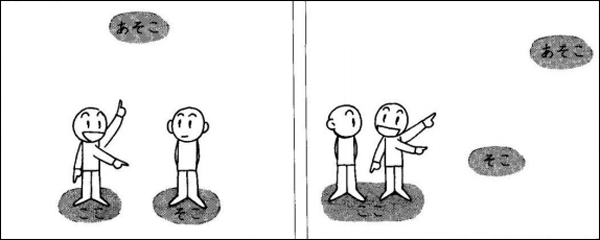

「ここ」chỉ vị trí mà người nói đang ở.
「そこ」chỉ vị trí mà người nghe đang ở.
「あそこ」chỉ vị trí ở xa cả người nói và người nghe.
「こちら／そちら／あちら」là những đại từ chỉ phương hướng, nhưng có thể dùng thay thế「ここ／そこ／あそこ」với sắc thái lịch sự hơn.
[Chú ý] Khi người nói cho rằng người nghe cũng ở trong phạm vi vị trí của mình thì dùng「ここ」để chỉ vị trí của cả hai, dùng「そこ」để chỉ vị trí xa hơn hai người, dùng「あそこ」để chỉ vị trí tương đối xa hai người.
